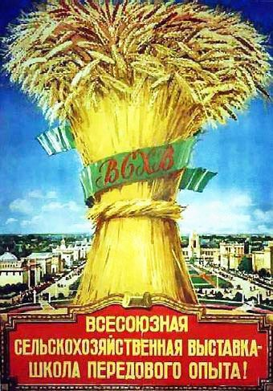

http://i-sergeev.livejournal.com/136505.html
i_sergeev
У генетиков есть чудо
Мы настолько привыкли жить в мире шаблонов и стереотипов, что разучились не только мыслить, но даже интересоваться чем-либо.
 Я
говорю не обо всех без исключения (исключения, к счастью, есть!), но о
подавляющем большинстве, которое с такой непоколебимой убежденностью судит о
вопросах, в которых вовсе не разбирается и ничего о них не знает.
Я
говорю не обо всех без исключения (исключения, к счастью, есть!), но о
подавляющем большинстве, которое с такой непоколебимой убежденностью судит о
вопросах, в которых вовсе не разбирается и ничего о них не знает.
Спросите например любого, что он думает о Вавилове и Лысенко. Не у молодежи,
конечно, которой эти фамилии вовсе неизвестны, а у людей постарше, тех, кто еще
помнит «Огонек» конца 80-х и фильм «Белые одежды».
Вам ответят, что Вавилов был генетик, а Лысенко – гонитель генетики (кто захочет блеснуть эрудицией, добавит, что Лысенко был «мичуринец»). Между тем это не имеет никакого отношения к правде. Это всего лишь стереотип, причем тупой, примитивный, рассчитанный на полное (даже не частичное, а именно полное!) невежество, незнание предмета.
Правда в том, что и тот и другой были генетиками.
И Лысенко и Вавилов утверждали существование генома и законы наследственности. Принципиально они расходились только в одном – вопросе о наследуемости приобретенных свойств.
Вавилов считал, что приобретенные свойства не наследуются и геном остается неизменным на протяжении всей истории своего существования. В этом он опирался на работы Вейсмана и Моргана (отсюда «вейсманисты-морганисты»). Лысенко же, напротив, утверждал, что геном может изменяться, фиксируя приобретенные свойства. В этом он опирался на неодарвинизм Ламарка.
Грубо говоря, если я преуспею в технических науках или гуманитарных науках своими трудами и стараниями, я имею все шансы передать эти завоевания в виде генетического наследства своему сыну (дочери), и неважно, что мой дед не имел об этих науках никакого представления.
Собственно, спор между «вейсманистами» и «неодарвинистами» был сугубо академическим. И это не был спор генетики с антигенетикой, а был спор между двумя направлениями в генетике.
Так что никаких «гонений на генетику» не было! Были неприятности у вейсманистов, да, но вовсе не потому что они были генетиками, а по иной причине: сначала растрата государственных денег, а затем попытка наезда на своих научных оппонентов с привлечением зарубежных коллег (конфликт в ВАСХНИЛ был спровоцирован именно ими, путем доносов, изучайте первоисточники!).
Современные научные исследования полностью подтвердили правоту Лысенко и ошибочность взглядов Вавилова. Да, геном изменяется! Но самое интересное, что это не имело никакого отношения судьбам этих двух ученых.
Позволю себе самое небольшое отступление. Среди множества современных, самых современных и ставших уже классическими работ, подтверждающих изменяемость генома, приведу только один абзац и только по одной причине: это написано Л.А. Животовским, сотрудником Института общей генетики им. Н.И. Вавилова (!) РАН.
«Итак, единственное, что остается по обсуждаемой проблеме – это назвать вещи своими именами. А именно, гипотеза Ж. Ламарка о наследовании приобретенных признаков верна. Новый признак может возникнуть через образование регулирующих комплексов белок/ДНК/РНК, модификацию хроматина, или изменения в ДНК соматических клеток и затем передаться потомству.»
(Животовский Л.А. Наследование приобретенных признаков: Ламарк был прав. Химия и жизнь, 2003. № 4. стр. 22–26.)
Итак, генетики, работающие в институте им. Н.И. Вавилова, собственно «вавиловцы», подтверждают правоту Лысенко! А что им остается?
Конечно, круг интересов и активной работы Лысенко не исчерпывался генетикой. И конечно, это лишний повод упрекнуть его в мужланстве. Например, за внедрение метода посадки картофеля верхушками клубней 22 марта 1943 г. Т.Д. Лысенко была присуждена Сталинская премия первой степени.
Если кто не знает: это значит разрезать клубень на части по одному глазку на каждый и использовать их как посадочный материал вместо целого клубня. Можно пойти еще дальше – использовать для посадки только глазок с небольшим фрагментом клубня - верхушку, а остальную картофелину употребить в пищу.
«Трофим Лысенко рискнул заготовить эти верхушки с осени, а сам посадочный картофель за зиму съесть, что было невероятно – никто не верил, что верхушки можно будет сохранить как посадочный материал до весны. Он пошел и на риск посевов хлебов по стерне. Этот способ, сберегающий почву от эрозии, до сих пор применяется как у нас на целинных землях, так и в Канаде.» (Киевский телеграф, 2010, ноябрь http://telegrafua.com/social/12541/ )
Фи, посадка картофеля верхушками, ха-ха!
Но дата вручения премии говорит о многом - как этот метод помог спасти от голода страну, помог продовольственному обеспечению нации и победе в войне в конечном итоге. От одного клубня получить один куст картофеля или пять-десять кустов, плюс сбереженная картошка, ставшая в годы ВОВ воистину «вторым хлебом», есть разница? Для кабинетной науки, наверное, никакой. А во время войны – большая, огромная!
«В 1936 году Трофим Лысенко разработал способ чеканки (удаление верхушек побегов) хлопчатника и этот агротехнический приём, увеличивающий урожайность хлопка, во всем мире до сих пор применяется повсеместно.
В 1939 году он разработал новую агротехнику проса, позволившую увеличить урожайность с 8-9 до 15 центнеров с гектара. В предвоенные годы он предложил в южных районах Советского Союза применять летние посадки картофеля для улучшения его сортовых качеств.
А его лесополосы, защитившие в СССР миллионы гектар от суховеев, а использование природных врагов вредителей сельскохозяйственных культур вместо ядохимикатов?»
(Киевский телеграф, 2010, ноябрь http://telegrafua.com/social/12541/)
Вот почему 10 сентября 1945 года Лысенко награждают очередным орденом Ленина «за успешное выполнение задания правительства в условиях войны по обеспечению фронта и населения страны продовольствием». Тоже ерунда, конечно. И таких достижений у Лысенко множество, ни один орден Ленина, а их у него было восемь(!) (столько же, сколько у А.Н. Туполева и С.В. Ильюшина), не был вручен просто так.
При Сталине орденами Ленина просто так не награждали.
Слово наркому и министру сельского хозяйства СССР И.А. Бенедиктову:
«…Ведь это факт, что на основе работ Лысенко созданы такие сорта сельскохозяйственных культур, как яровая пшеница «Лютенцес-1173», «Одесская-13», ячмень «Одесский-14», хлопчатник «Одесский-1», разработан ряд агротехнических приемов, в том числе яровизация, чеканка хлопчатника. Преданным учеником Лысенко, высоко чтившим его до конца своих дней, был и Павел Пантелеймонович Лукьяненко, пожалуй, наш самый талантливый и плодовитый селекционер, в активе которого 15 районированных сортов озимой пшеницы, в том числе получившие мировую известность «Безостая-1», «Аврора», «Кавказ». (Бенедиктов И.А. О Сталине и Хрущеве. Молодая гвардия. 1989. № 4.)
Подробнее о И.А. Бенедиктове здесь Очень рекомендую узнать больше об этом действительно великом человеке!
Ну, и конечно, знаменитая «яровизация пшеницы» - технология температурного мутагенеза, позволявшая «использовать влияние температурных факторов на онтогенез сельскохозяйственных культур и их формообразование с целью селекции новых сортов, повышения урожайности и улучшения агротехники выращивания перспективных сортов в неблагоприятных климатических условиях».
Для своего времени это была инновационная технология, позволившая значительно увеличить производство зерна и с успехом применявшаяся течение двадцати лет. Почему же в конечном итоге от нее отказались? А очень просто, по причине «чрезмерной трудоемкости». Любая технология когда-нибудь устаревает. Это совершенно нормально. Она делает свое дело и уходит, уступая место новым, боле современным технологиям.
Интересно, что работы в этом направлении проводятся и сегодня. А для нашей страны, с ее мягко говоря непростыми климатическими условиями, это направление имело и имеет чрезвычайную актуальность. И не случайно в 1932 году Вавилов бросился в США докладывать на Международном конгрессе по проблемам генетики и селекции о новом революционном методе – яровизации.
Да, да, вам не почудилось! Именно Вавилов, именно о работах Лысенко, именно начальник о работе своего подчиненного, как водится – работает один, а докладывает за границей другой (помните, в фильме «Гараж»: «Гуськов работает, а в Париж за шмотками едете вы!»).
«Замечательное открытие, недавно сделанное Т.Д. Лысенко в Одессе, открывает новые громадные возможности для селекционеров и генетиков… Это открытие позволяет нам использовать в нашем климате тропические и субтропические разновидности». (Н. И. Вавилов, США, VI Международный генетический конгресс, 1932 г.)
Так что ничего «антивавиловского» в яровизации пшеницы нет. Вавилов сам о ней докладывал на конгрессе в США. Правда, в качестве компенсации, он же, Н.И. Вавилов в 1933 году номинировал работу Лысенко на соискание Сталинской премии как «крупнейшее достижение физиологии растений за последнее десятилетие». (Струнников В., Шамин А. Лысенко и лысенковщина: особенности развития отечественной генетики.)
Конечно, несколько странно докладывать о возможностях управляемого мутагенеза и тут же утверждать о неизменности генома, это как в популярном советском фильме: «Здесь помню, а здесь не помню». Ну, да ладно.
Никто не говорит, что Вавилов был плохим человеком. Вовсе не за это он был арестован и посажен в тюрьму (а вовсе не расстрелян, как полагают некоторые).
Проблема Вавилова была не в том, что он был генетиком (Лысенко тоже был генетиком, и это не помешало ему получить восемь орденов Ленина). И даже не в том, то он был неправ (в 1940-м это было еще не очевидно). Проблема была в нецелевом использовании государственных денег. Хотите знать, как это было? Обратитесь первоисточникам, они пока еще не засекречены.
Фактически процессы против генетиков начались с того, что были не выполнены заявленные группой Серебровского-Вавилова планы по выведению новых сортов в пятилетку 1932 – 1937 года.
Государство никогда не было меценатом по отношению к науке, оно всегда было инвестором!
Всегда! И при социализме, и при капитализме, при какой угодно системе, если человек берет деньги, пообещав прибыль, а прибыли этой не дает, он наказывается. Растратил – значит украл. «Украл, выпил – в тюрьму!»
Печально? В случае с Вавиловым - да. Но справедливо.
Долгое время не спрашивали. Доносы на Вавилова поступали с начала 1930-х, никто им значения не придавал, подождем – посмотрим. В 1940-м стали спрашивать. Если на вложенный рубль принес, грубо говоря, три – молодец, получи орден.
У Лысенко с этим проблем не возникло, за то и ордена. Получил новые сорта, разработал технологии, внедрил, вполне понятный, подсчитанный экономический эффект. Достижения Лысенко – результат эффективной работы научного аппарата в кризисные периоды при решении важнейших народнохозяйственных задач.
А у Вавилова возникли проблемы. Деньги потрачены, а отдачи никакой. Ни рубля. Ничего. То есть совсем ничего, кроме наблюдений за мушкой дрозофилой. Это конечно хорошо, но это вовсе не то, на что выделялись деньги!
20 ноября 1939 года Сталин, наконец, спросил: «Ну что, гражданин Вавилов, так и будете заниматься цветочками, лепесточками, василёчками и другими ботаническими финтифлюшками? А кто будет заниматься повышением урожайности сельскохозяйственных культур?» (Лебедев Д. В., Колчинский Э. И. Последняя встреча Н. И. Вавилова с И. В. Сталиным (Интервью с Е. С. Якушевским)).
 Народ
на это ответил частушкой:
Народ
на это ответил частушкой:
У генетиков есть чудо:
Дрозофила там живет,
Основным сельхозживотным
Издавна она слывет.
Яйца свежие приносит,
Шерсть и молоко дает,
Землю пашет, сено косит,
Лихо лает у ворот!
Но конечно, русский народ дикий, отсталый, дремучий. А мы белые, чистые и в кабинетах. Вот и фильм называется «Белые одежды», а как же иначе.
Был ли Вавилов сознательным вредителем? Вряд ли. Думаю, тут следователи несколько перестарались. Но то, что его деятельность можно было трактовать как вредительство, признал сам Вавилов.
«В течение 2 недель после ареста Вавилов отрицал обвинения во вредительстве. Положение изменилось, когда следователь предъявил Вавилову ряд показаний его друзей и коллег, подтверждающих версию следствия. После этого Вавилов на нескольких допросах дал показания, что проводимая им работа может быть интерпретирована как вредительство - сознательное нанесение ущерба экономике страны». (Дело Н.И. Вавилова)
Ключевые слова здесь – «может быть интерпретирована» как вредительство. Сознательное или несознательное – труднодоказуемо, главное факты. Растрата – вредительство!
Вот слова самого Н.И. Вавилова из протокола допроса:
«Одним из основных вредительских мероприятий было создание чрезмерно большого числа узко специальных, совершенно не жизненных, научно исследовательских институтов… оторванных от непосредственной агрономической работы, это привело к дезорганизации научно-исследовательской работы... к распылению и без того недостаточных кадров и вызвало совершенно ненужные крупные государственные затраты.» (Протокол допроса Н.И. Вавилова 6 сентября 1940 г.)
Вся вина Н.И. Вавилова заключалась в растрате огромных государственных средств, в том числе валютных, что и сегодня, строго говоря, является преступлением. Другое дело, что сегодня за это не наказывают, даже не лишают премии. А в трудные предвоенные годы, когда каждый рубль был на счету, спрашивали и наказывали.
А ведь Т.Д. Лысенко говорил об этом, неоднократно, уговаривал, увещевал:
«Я неоднократно заявлял генетикам-менделистам: давайте не спорить, все равно менделистом я не стану. Дело не в спорах, а давайте дружно работать по строго научно разработанному плану. Давайте брать определенные проблемы, получать заказы от НКЗ СССР и научно их выполнять. Пути, при выполнении той или иной практически важной научной работы, можно обсуждать, можно даже по поводу этих путей спорить, но спорить не беспредметно». («Под знаменем марксизма», №11, 1939 г.)
Собственно, Вавилов был вполне нормальным «академическим ученым», оторванным от своей страны и своего народа. Может быть, «академическому ученому» это простительно, но не на это ему выделялись деньги, и не это он обещал, а создание новых сортов. И обещание свое не выполнил, деньги растратил – значит, сознательно ввел в заблуждение, обманул государство. И за это не посадить? Пожурить и отпустить? На это вероятно и рассчитывал Вавилов. Но вот не сошло рук, пришлось сидеть.
Беда Вавилова была в несвоевременности. В каких-нибудь 1970-х годах он бы прекрасно получал премии и звания. Но для того чтобы финансировать сугубо теоретическую науку, без практической отдачи, требуются исключительно благоприятные условия, это мало кому по карману. Ни в 1930-х, ни в 1940-х таких условий конечно не было! Но Вавилов демонстративно игнорировал этот факт, за что и поплатился.
Между прочим, когда это произошло, все с радостью стали его пинать, нисколько не оспаривая справедливости обвинений. Люди «в белых одеждах» с готовностью предали своего соратника и учителя. Единственным, кто отказался участвовать в кампании осуждения, был… Лысенко!
Показания Т.Д. Лысенко: "На заданный мне вопрос, что мне известно о вредительской деятельности Н.И. Вавилова по уничтожению коллекции семян в ВИРе, отвечаю: Мне известно, что академик Н.И. Вавилов собирал эту коллекцию. О том, что он уничтожал эту коллекцию, мне ничего не известно".
Подпись: академик Т.Д. Лысенко
(Из материалов следствия по делу Н.И. Вавилова)
Из интервью И.А. Бенедиктова:
"Когда арестовали Вавилова, его ближайшие сторонники и "друзья", выгораживая себя, один за другим стали подтверждать "вредительскую" версию следователя. Лысенко же, к тому времени разошедшийся с Вавиловым в научных позициях, наотрез отказался сделать это и подтвердил свой отказ письменно. А ведь за пособничество "врагам народа" в тот период могли пострадать люди куда с более высоким положением, чем Лысенко, что он, конечно же, прекрасно знал ..." (Бенедиктов И.А. О Сталине и Хрущеве. Молодая гвардия. 1989. № 4.)
Ну, а что же фильм по книге Дудинцева «Белые Одежды»? Действие происходит уже после войны в связи с так называемым «разгромом ВАСХНИЛа и генетики». Хотя как мы знаем, речь может идти только о разгроме вейсманистов, последователей Н.И. Вавилова, но никак не генетиков и никак не ВАСХНИЛа. Генетика в СССР как развивалась, так и продолжала развиваться, и никто ее решительно не громил!
 Слово
Т.Д. Лысенко:
Слово
Т.Д. Лысенко:"Утверждение акад. Серебровского, что я отрицаю нередко наблюдаемые факты разнообразия гибридного потомства в пропорции 3:1, также неверно. Мы не это отрицаем. Мы отрицаем ваше положение, говорящее, что нельзя управлять этим соотношением. Исходя из развиваемой нами концепции, можно будет (и довольно скоро) управлять расщеплением". (Т.Д. Лысенко. Агробиология. Работы по вопросам генетики, селекции и семеноводства. Изд. 6-е. М.: Сельхозгиз, 1952. – с. 195.)
Таким образом, работы велись с тем самым пресловутым «менделевским расщеплением», существование которого по Дудинцеву Лысенко якобы отрицал!
Так что генетика тут явно не причем. Вот вкратце что произошло:
В 1946-47 гг. вейсманисты предприняли атаку против Лысенко, пытаясь убрать его с поста президента ВАСХНИЛ. Вначале их наступление, проводившееся с привлечением партийного аппарата, попытками оказать давление зарубежной прессой, было успешным. Однако в конечном итоге оно провалилось. На августовской сессии ВАСХНИЛ 1948 г. Т.Д. Лысенко и его группа, поддержанные Сталиным, одержали победу над оппонентами.
Почему И.В. Сталин поддержал именно Лысенко, понятно. Потому что он прекрасно знал, что его работы приносят стране пользу, а вейсманисты бесполезны.
«В результате многолетней работы Дубинин "обогатил" науку "открытием", что в составе мушиного населения у плодовых мушек г. Воронежа и его окрестностей во время войны произошло увеличение процента мух с одними хромосомными отличиями и уменьшение других плодовых мух с другими отличиями в хромосомах.
Дубинин не ограничивается добытыми им во время войны столь "высокоценными" для теории и практики открытиями, он ставит для себя дальнейшие задачи и на восстановительный период и пишет: "Будет очень интересно изучить в течение ряда последующих лет восстановление кариотипической структуры популяции города в связи с восстановлением нормальных условий жизни".(Движение в зале. Смех).
Таков типичный для морганистов "вклад" в науку и практику до войны, в период войны и таковы перспективы морганистской "науки" на восстановительный период! (Аплодисменты)».
(Из доклада Т.Д. Лысенко на сессии ВАСХНИЛ 1948 г.)
Или упрекнуть Сталина за то, что он вообще вмешался в «академический» спор? А что ему оставалось делать? Необходимо было прекратить эту свару, которая продолжалась уже два года и явно мешала научной работе. Ведь государство было не посторонним наблюдателем, а заказчиком научных исследований. Вся научная работа осуществлялась на государственные деньги. И естественно, что государству было не безразлично, на что они тратятся, и как заказчик, оно имело право и обязано было при необходимости вмешиваться. А такая необходимость, причем крайняя необходимость, была!
Должен был Дудинцев знать об этом? Да. Если ты начинаешь писать о предмете, то первое с чего следует начать – это собрать все факты по данному предмету.
Тем не менее, книга и фильм по утверждению Дудинцева основаны на документальных свидетельствах. Но вот вопрос. Почему Дудинцев использовал свидетельства только с одной стороны? Почему он не выслушал свидетелей с другой стороны?
Это вы считаете беспристрастным исследованием?
Представляете себе судебное разбирательство, где выслушиваются только свидетели обвинения или только свидетели защиты? Что же это будет за приговор?
Было бы еще полбеды, если бы это были незаинтересованные свидетели, так нет же! Дудинцев использует показания заинтересованных лиц!
Вот и получается, что никакой фактической основы книга и фильм не имеют! По двум причинам:
- использованы показания заинтересованных свидетелей;
- использованы показания свидетелей только с одной стороны.
Это профанация, вранье, если угодно. Можно сказать, подлость. Так что же Дудинцев – негодяй, подлец? Не знаю, не был с ним лично знаком. Возможно, просто дурак.
Этакий наивный дурачок, который уверовал сам и непременно хочет, чтобы уверовали все в его детскую фантазию, а зачем, почему, неважно!
Такие вот дурачки или подлецы хрущевской «оттепели» (а по существу троцкистского реванша) и последующих лет «десталинизации» принесли больше вреда нашей стране, чем ЦРУ.
Или как вы думаете?
Так из-за чего весь сыр-бор, ради чего на академика Т.Д. Лысенко было вылито столько грязи, мерзости, лжи? Для чего было клеветать на ученого, сделавшего так много полезного для нашей страны? Зачем было очернять его имя, незаслуженно, несправедливо, с упорством, достойным лучшего применения, делать из него одну из самых одиозных личностей отечественной науки ХХ века?
Вот, пожалуй, один из лучших ответов:
«Чтобы понять, почему против Т.Д. Лысенко в 1960-90 гг. велась такая тотальная информационная война, следует обратить внимание на социальное значение основной отстаиваемой им концепции - возможности изменения наследственности под влиянием изменений в условиях жизни организма.
Это положение, подтверждавшееся им на практических экспериментах, противоречило, однако, мировоззренческим установкам некоторых влиятельных групп, придерживавшихся убеждений о врождённом и неизменном превосходстве одних народов (или социальных групп) над другими.
Критика теории Вейсмана со стороны Т.Д. Лысенко содействовала и провалу евгенических проектов, активно продвигавшихся в 1920-30-х годах ведущими генетиками-вейсманистами в СССР. Эти проекты, подразделявшие советских людей на "ценных" и "второсортных", были близки образу мышления как тогдашних троцкистов - аналогов немецких нацистов, их коллег-конкурентов - так и многих либералов, их преемников и часто родичей.»
(«Академик Трофим Денисович Лысенко». Овчинников Н.В. Литературная Учеба (ЛУч), 2009).
P.S. А кто-то еще удивляется, что неотроцкист Удальцов выступает на неолиберальных митингах Рыжкова-Немцова-Явлинского и Ко.! А ничего удивительного нет – троцкисты и либералы всегда были заодно против России. Полезно бывает изучать историю.
28/03/2012